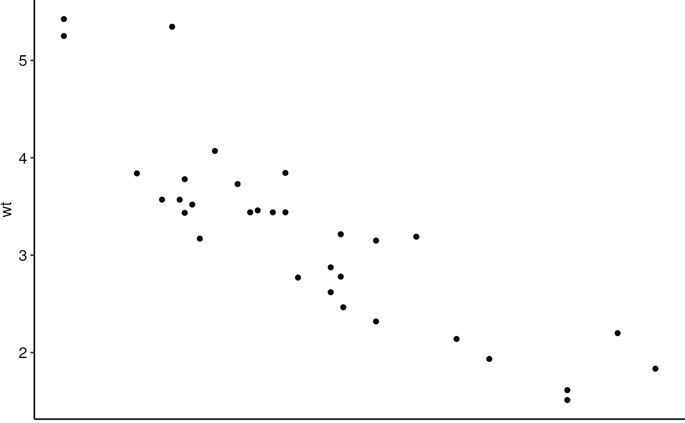

theme_no_x.RdMakes plots more suitable for use with Illustrator by removing most margins and the X-axis (which is usually replaced by something else in my plots).
theme_no_x(base_size = 12, base_family = "")To further remove the space below the x-axis, use labs(x = NULL)
Based on theme_classic() from ggplot2.
ggplot(mtcars) +
geom_point(aes(x = mpg, y = wt)) +
theme_no_x() +
labs(x = NULL)
#> Warning: The `axis.ticks.margin` argument of `theme()` is deprecated as of ggplot2
#> 2.0.0.
#> ℹ Please set `margin` property of `axis.text` instead
#> ℹ The deprecated feature was likely used in the scrattch.vis package.
#> Please report the issue to the authors.
